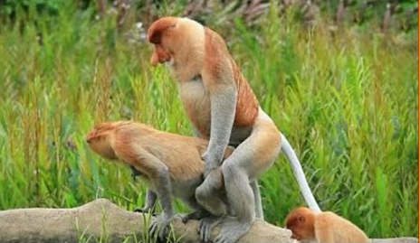

Para essa especime deee macaco enquanto maior o nariz mais viril ele é
O macaco-narigudo (Nasalis larvatus) é uma espécie de primata endêmica da ilha de Bornéu, notável por seu nariz longo e pendente — especialmente proeminente nos machos adultos. Essa característica curiosa está relacionada à seleção sexual: acredita-se que o nariz avantajado funcione como um sinal visual e acústico para atrair fêmeas, além de intimidar machos rivais. Quando excitado ou vocalizando, o nariz vibra e amplifica os sons emitidos, o que tem papel importante na comunicação sexual e social.
Organização Social e Reprodução
Esses macacos vivem em grupos sociais estruturados, geralmente compostos por um macho dominante e várias fêmeas com seus filhotes, embora também existam grupos apenas de machos. A estrutura social influencia diretamente seu comportamento sexual.
A reprodução do macaco-narigudo não é restrita a uma estação específica — ou seja, eles são sexualmente ativos durante todo o ano. As fêmeas demonstram receptividade por meio de vocalizações, postura corporal e até mesmo contato visual direto. Os machos respondem com vocalizações específicas e comportamentos de corte, como o balançar da cabeça e exibição do nariz.


Sexualidade e Comportamentos Sociais
Além da reprodução, comportamentos sexuais entre os macacos-narigudos também cumprem funções sociais, como reforço de laços dentro do grupo e redução de tensões. É comum observar comportamentos como a masturbação, a cópula não-reprodutiva e, em alguns casos, interações sexuais entre indivíduos do mesmo sexo — fenômenos observados em diversas espécies de primatas.
Essas interações refletem a complexidade da sexualidade animal, que vai além da reprodução e envolve aspectos sociais, emocionais e até políticos dentro do grupo.
Inspirado em

se tem curiosidade como acontesse clik aq

>